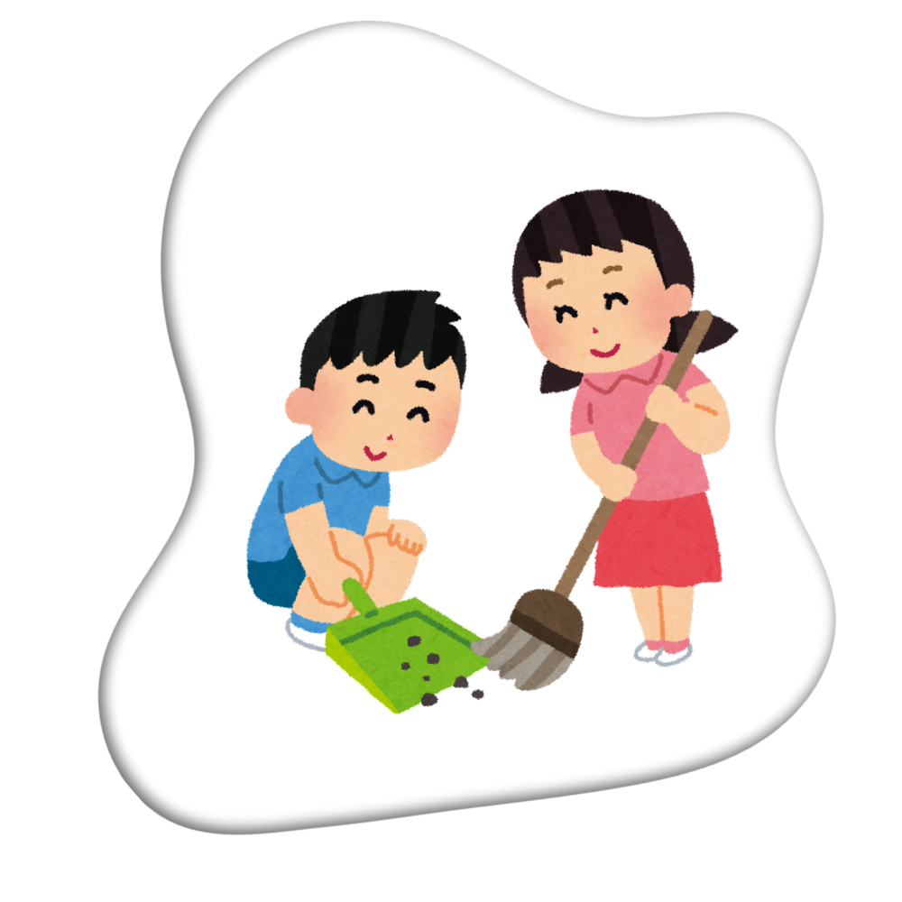
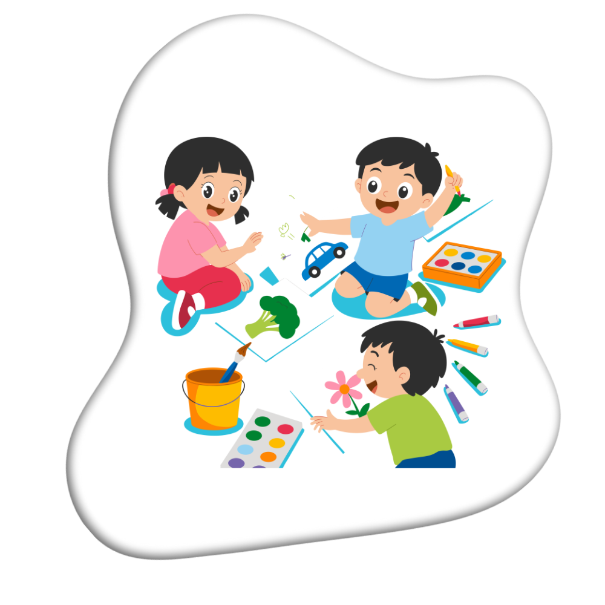
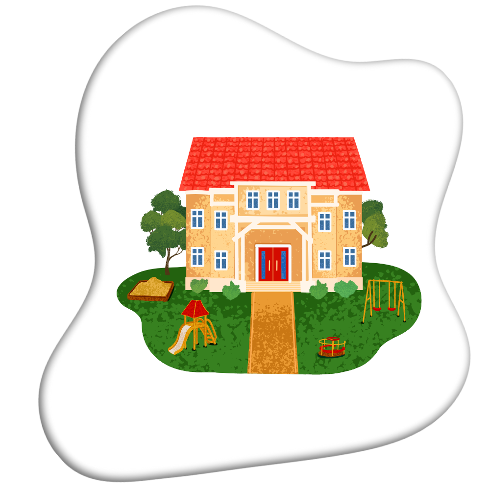
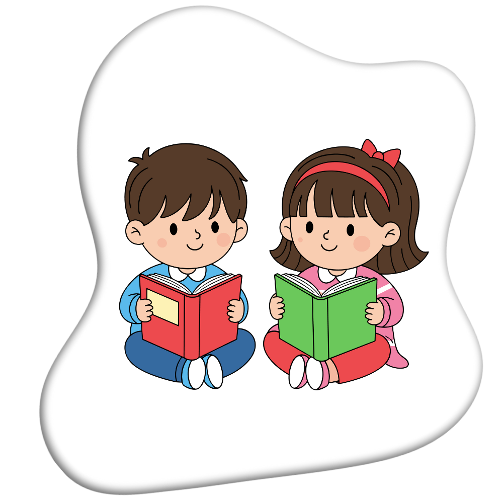

Profil Singkat
TK PGRI 1 Karangpawitan berdiri sejak 1983, terakreditasi B, di bawah naungan Yayasan PGRI Kabupaten Garut. Dengan tenaga pendidik berpengalaman, sekolah ini berkomitmen menciptakan lingkungan belajar yang aman, ceria, dan penuh kasih.
Lihat Profil LengkapSerunya Belajar di TK PGRI 1 Karangpawitan

Pembentukan Karakter Sejak Dini
Mengajarkan nilai tanggung jawab, kemandirian, dan sopan santun sejak usia dini.

Kegiatan Seru
Belajar sambil bermain dengan aktivitas kreatif dan penuh tawa setiap harinya.

Fasilitas Nyaman
Lingkungan belajar yang bersih, aman, dan mendukung perkembangan anak.

Program Edukatif
Kegiatan belajar yang dirancang untuk menumbuhkan rasa ingin tahu dan kreativitas anak.